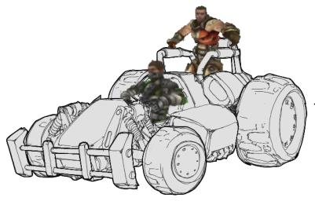

Mod Ideas/CarJack
Description
This concept is somewhat similar to Mod Ideas/UnrealBallPool – but I came up with it separately, I swear 
Each team's base is a "garage", a large area where vehicles can be parked (not necessarily enclosed). At the start of the game, a number of cars are spawned around the map. The goal of the game is to steal all the cars, and park them in your team's garage. Cars can be stolen from the garage as easily as anywhere else on the map, so your team must guard your garage as well as hunt down the vehicles.
If a team has every car parked in their garage for 10 seconds, or they hold the majority at timeout, they win the game. In the event of a tie at timeout, the game goes into "sudden death" mode, where any change in car balance between the teams (gained or lost) immediately determines the winner.
The cars should be designed to allow for a passenger, who can stand in the back and use weapons. This promotes the use of the cars to get to other cars (drive a second player out to the car, and drive both back to base), rather than just hoarding them. Ideally, the physics should be written such that if the car is jolted sufficiently, the occupants can be thrown out (ie, high-speed collisions send the occupants into ragdoll mode temporarily)... ramming is a valid technique for stealing currently-occupied vehicles. 
The cars should be indestructible, such that there is always a constant number of vehicles in play. They should also be self-righting, so cars don't get abandoned upside-down and undriveable. In the event that a car does get stuck somehow, they should be just light enough that judicious application of the shield gun can nudge it back into play. (This also means that a potential way to quickly clear an opponent's garage is to hit it with a Redeemer, and send the cars flying  )
)
Depending on map design, cars could either spawn at known points, or randomly throughout the map (if no points are assigned). The number of cars spawned is also a map design issue (with a game setting override), although should never be less than two. A mapper could, for example, design a map with four cars – two already parked in each team's garage – forcing an incursion into enemy territory...

An example car concept |
Kagato: I won't have the skills to work on this mod myself for some time, so I'll throw this one open.
Required Work
CarJack Gametype
- Subclasses xDeathmatch
- Enables vehicles
- Keeps kills from scoring
GarageVolume
- Scores specified team on Touch();
Comments
GRAF1K: I don't know about the rest of you, but this sounds INCREDIBLY fun, and even if it was based on UnrealBallPool (which it wasn't) it would be a way better gametype in it's own right. Awesome idea Kagato.  Doesn't sound too hard to script; I think I could do it myself in not too much time.
Doesn't sound too hard to script; I think I could do it myself in not too much time.
Kagato: Thanks! Glad you like it
(I've realised this probably isn't really a CTF variant (despite similarities in gameplay) because the maps will have to be different. I'll move this to a different section if more appropriate.)
GRAF1K: No one really cares where you put it; it is somewhat like CTF. But if you'd like it somewhere else that's fine.
MeanFish: This is an amazing idea... when does it get released? Seriously... this one's got a lot of potential. A couple important questions though:
- So if someone is in a car they are indestructible too?
- How many people can fit into a car?
- What kind of theme would you go with for the cars/maps?
Foxpaw: Well, it's quite possible that you could still have people inside a car able to be killed. In my mod it's already quite possible to hit the driver by shooting through windows, or potentially doors and such if your weapon is powerful enough. It appears that the vehicles in UT2004 are going to have the ability to hit the driver separately from the vehicle as well, though that's just speculation based on screenshots.
Kagato: I envision a 2-seater open-topped car, like a dune buggy with a rollcage. The occupants are exposed and can be shot at. (I guess a bit like Halo's Warthog, but smaller.) Is it possible to set the bone positions of a character? Ideally, you could put the driving player in a sitting pose, and "attach" him to the car – maybe even have his arms move as the car steers. I have yet to develop my modelling skills, but I can post a sketch if you like. (sketch added)
Foxpaw: It is possible to set the bones of a character to make scripted animations, but it's not the best route. Many custom models will not animate properly due to a different bone structure. UT2004 has "exposed" drivers (at least, you can see them in the screenshots, don't know if they can be shot or not) so there is almost certainately going to be a standardized driving animation that people making models will include.
MeanFish: It seems to me that by making some alterations to the collsion volume for the vehicle mesh you could indeed shoot at the driver i.e. not have it include areas where you intend for the assailants to shoot through.
HSDanClark: I actually got to play UT2004 at the Unreal University last weekend, so maybe I can settle a thing or two. When you're in a vehicle, whether it's an open vehicle or a closed vehicle, both the player and the vehicle take damage when shot at. In the lower left corner, both your health and the "health" of the vehicle are displayed. This being the case, the only way to hit the driver without hitting the vehicle is to use an accurate instant-hit weapon, like the lightning gun or the sniper rifle. Any other weapons will either cause splash damage to the vehicle or have (like the minigun) a spread that will spill over onto the vehicle. Don't worry about the need to kill a driver without damaging a vehicle – vehicles can he repaired in the field by the alt-fire of the linkgun. If you want someone's vehicle and you damage it, you can just go up and "heal" it before 'jacking it. Also, and this might be a good launching point for modders, Onslaught is the only gametype that supports vehicles at ship time. Any CTF, DM, or other gametype maps that contain vehicles will have to be produced by the community – and mods have to be scripted to allow things like flag carriers to get in a vehicle.
GRAF1K: This would have to be a custom gametype with custom maps anyhow. As for shooting players while driving:
Quote:
Originally Posted by Kagato
The cars should be indestructible, such that there is always a constant number of vehicles in play.
HSDanClark: That's fine... the cars can be indestructible. I haven't seen the vehicle UScript that comes with UT2004, but I'm sure there will be a property to set for taking/not taking damage. Failing that, they can always be re-scripted – it's about a two line fix to make them not take damage.
Foxpaw: I'm not sure that indestructable cars are the way to go. I would instead suggest something like respawning cars. Or maybe even have new cars drive on to the map with a non-combative AI driver who you'd have to cap before taking the vehicle. Then you could have them come in through a tunnel or something. I think that would be better than just having cars respawn from thin air.
Indestructable cars I don't really like the idea of because although being indestructable to shooting is reasonable enough, what if it gets driven off a cliff? There would be no way to get the vehicle back up onto the map. (Unless perhaps you had something like in Mario Kart where something picks up the car and puts it back onto the map somewhere.
GRAF1K: Hmmm. Suppose it doesn't accept weapon damage instead of all damage?
Foxpaw: Well, depending on how you destroy it when it goes off a cliff or whatever, when something surpasses the KillZ of the zone, I don't think it get's damaged, it just gets destroyed. I think. It destroys things like weapons and the camera, at least on my mod, so I think that it may just call destroy instead of takedamage.
However, having said that, it's still entirely possible that a vehicle could get stuck or trapped somehow, or alternatively the Karma system can suffer an internal error and that will result in either destruction of the karma object, or immediately ceasing simulation of it, depending on the setting of bDestroyOnSimError in the KParams.
So, I think that there should be some means of replacing vehicles that are destroyed, either by getting trapped, suffering a Simerror, or something else.
Kagato: Definitely need some way of handling car loss conditions (simply respawning the car where it started should do), but players shouldn't be able to deliberately destroy cars, in my opinion. If you can blow them up to spawn a fresh car, it takes away from the "car theft" gameplay a bit. I also think being able to snipe the driver is important to gameplay, so I hope that can be done.
A friend had an amusing suggestion for anchoring the driver; drop him into ragdoll mode and attach his hands to the wheel and feet to the pedals, and let physics sort out the rest. You'd end up with a pretty drunk looking driver, I think...
GRAF1K:
Quote:
Originally Posted by Kagato
You'd end up with a pretty drunk looking driver, I think...
Not if you attach a few other things. That's actually a good idea. Imagine watching the player get thrown like he's getting whiplash as he does a doughnut manuever...
Foxpaw: You'd probrably also want to have a seatbelt if you were going to do that. However, having said that, the performance implications of having numerous players ragdolled and in constant contact with a karma vehicle will put a lot of stress on the physics engine.. I think you might have a problem with framerate if you have the ragdoll-driver thing.
GRAF1K: Now that 2K4 has been released, it's time to resurrect this page and get crackin' people! 
Apparently we've got our player being visible from outside the vehicle problem solved.
Shootable cars ought to be fine. They'll just respawn after being destroyed (and ONLY after). People will end up camping the vehicle respawn area like in BR. Hope no one gets annoyed by that.
The Raptor ought to be left out, as it'd be too easy to capture.
Darkwarrior: About the indestructable cars, what if you had it taking damage, but when its health gets to zero, it isnt destroyed. Instead it just kills the driver and resets its health. I think it would be possible...
Escher0: This sounds like a pretty good idea, partly because it's a simple one and could be picked up easily. Might I suggest having different point values for different vehicles? Like a Manta, because it's so fast, may only be worth 1 point but a Goliath might be worth 3. Also, the Leviathon should probably also be left out if the only way to get someone else out is to flip the vehicle. Of course, that could be avoided by making all new vehicles. Is anyone working on this yet?
Tony: I know I'd definitely help out where I could... unfortunately, I'm only a mapper - I don't know much about UScript or any of the karma stuff. With the extra people on vehicles, could you un-equip the Scorpion and give the gun space properties akin to the Hellbender's secondary and tertiary guns? I mea, the weapon seems to be a player-controlled module on the vehicle. Is it possible to change that to a non-player-controlled slot for a player, if you see what I mean?
T1: All of this could be done. The part about attaching players to the seat would probobly be hard on CPU. You could make respawning cars an option you could turn on/off when you start up the match. To prevent car spawn camping, you could make it so that if you aren't in a garage for say, 1 minute, then you start taking damage (notice how I said "a" not your, it can be an enemy garage). For larger maps you could make controllable secondary garages that you could choose to respawn at and would keep you safe from the timer damage. You could also make the time limit for damage set by the map. Another thing would be useful Mod Ideas/Kinetic Rifle so you could knock cars out of the enemy garage, and also to prevent enemies from entering your garage and forcing them to time-limit gib. Actually time-limit gibbing would be pretty cool in other game-types also.
Relix: I like the idea very much . What would be nice is to have big maps (onslaught-style), with a couple of vehicles spawned randomly, so that the teams should go look for them. Perhaps both get a raptor to be able to spot the vehicles faster.
Mr.bob: Awsome idea! although one of the things you need to edit into the main text is how easy it is to kill someone inside a car. You should send thing to the UT staff, maybe they can incorporate it into the next realese of UT2004. They need to have some mods officalized and attached to the next retail releace, like chaos for example.
Doodle77: im also back, one idea about the extra people being in the veicle but they can get knocked out, you can just make it so that the vehicle has a cradle on top for people to stand on while the vehicle is moving. regular UT2004 physics would apply to these so if the veichle got hit while moving the people would get thrown off kind of like one manta stratagey(the people get on the sides of the manta and can attack from there). this would make it more like escorting the veicle back to your base in a convoy. rather than it just being one person doing all the work it would be teamwork, like in onslaught.
SyPTo: What if you make the vehicles auto-lock after 30 seconds, they will remain in your team but neither team will be able to use them , this will cause the teams to have to switch vehicles after ejecting it for more then 30 sec , also when a vehicle is left after 60 seconds it should either lock or auto destruct like a redeemer type damage if it's not in your teams garage.maybe even an mutator that if a vehicle is left the team leaving the vehicle can initiate an auto destruct sequence ?...this would make for some interesting strategies.
Sweavo: ONS vehicles have an attribute that allows the driver to take splash damage. I think it's easy to stop vehicles taking damage themselves, yet passing it on to the driver. I agree that it shouldn't be possible to just blow up vehicles and then go to the respawn-point. How about there is a notion of vehicle health, but that it never results in destruction, just a proportional reduction of the vehicle's armour and power? Thus you could shoot the heck out of a vehicle, making it harder to escape in, and you could use the link gun alt fire to heal it again to get more speed & armour.
Sweavo: also, I've got a rough working Tractor Beam weapon at home, potential fun could be had with that... towing a wrecked scorp with a hellbender, anyone? If someone can do meshes, we could rustle up an armoured tow-truck